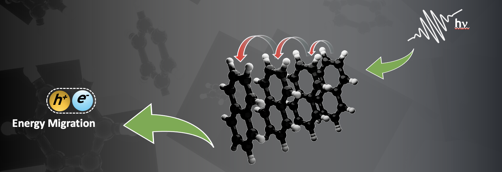

Welcome to exciton diffusion’s documentation!¶
{kind=link}
Exciton Diffusion is a flexible open source Python tool for the simulation and examination of exciton diffusion in a variety of materials. The tool supports materials in the hopping regime and has the flexibility to extend to more complicated equations that describe the intermediate regime. The project includes simulations for point particles and can be expanded to include more physical systems, such as atoms in a crystal lattice. The project lives on GitHub at Exciton Diffusion and offers a simple and intuitive API for usage and extension.
Module Usage¶
- Requirements:
Python 3.6-3.8 on Linux.
Python 3.7-3.8 on Mac.
To get other requirements, run:make- Running the Code
- To run the code, enter the command:
python driver.py input.txt output.txtwhere input.txt is formatted as described below, and output.txt is a file that will contain the output.
- Input File
- The input file should consist of a first line of conditions, followed by a list of sites.Conditions line should be of format:
<systemtype> <dimension> <ratetype> <modeltype> <starttime> <endtime>Sites are of format:<sitetype> <specifications> coord1 coord2 coord3
Options
systemtype:
crystaldimension:
1,2,3ratetype:
marcus,arrheniusmodeltype:
kmcstart/endtime are in picoseconds
sitetype:
pointparticle,molecule
High-level Modules¶
Driver Module¶
- driver.main()¶
- The main() module is the entry point for the program.It organizes and coordinates the execution of the other modules:- Reads in command line arguments and sends to the arg parser.- Launches a simulation, currently for a single point, throughthe call to exc_diff.single(). This is currently a single pointsimulation and will be extended later for multiple particles.- Sets the save path and feeds simulation results to an output module.
Single Module¶
This propagates an exciton from start time to end time given a system
- single.single(system, start_time, end_time)¶
Diffuses an exciton in a system from start_time to end_time
- single.__init__()¶
Input/Output Modules¶
Input Processor¶
Parse an input file for a simulation configuration, which includes the types of system, model, etc., as well as a list of positions.
TODO: An example of the input file format.
- inputprocessor.process_input(in_file)¶
Process a single input file.
- Parameters
in_file – the filename of the input file.
- inputprocessor.is_float(string)¶
Check if a string contains a floating point number.
- Parameters
string – The given string.
- Returns
True if the string contains a floating point number
Com_Line Module¶
Takes a file from command line input
- com_line.__init__()¶
- com_line.command_line(params)¶
Interactive asks the user for an input file, calls the inputprocessor, and return the processed input
Interactive Module¶
Takes a file from interactive input
- interactive.__init__()¶
- interactive.interactive()¶
Interactive asks the user for an input file, calls the inputprocessor, and return the processed input
Pickling Module¶
Pickles input into a system object, start_time, and end_time
- pickling.__init__()¶
- pickling.pickling(params)¶
Interactive asks the user for an input file, calls the inputprocessor, and return the processed input
- pickling.pickle_file_name(input_file, object_type)¶
Graphical Out¶
Plotting graphical outputs given a simulation output file.
- graphical_out.make_dir(path, name=None)¶
Helper functoin to make a new directory
- graphical_out.exists_dir(path, name=None)¶
- graphical_out.process_sites(site_list)¶
- graphical_out.find_site(site_list, site)¶
- graphical_out.plot_sites(site_list, exc_list=None, color='#1f77b4', alpha=1)¶
- graphical_out.animate_3D(site_list, t_list, exc_list, save_params=None, site_rad=100, interval=100, padding=1, show=True, repeat=True)¶
- graphical_out.main()¶
My CSV¶
- mycsv.write_csv(t_list, exc_list, name='out')¶
Graph¶
- graph.graph(t_list, exc_list)¶
Get Diffusion¶
- get_diffusion.get_diffusion(exc_list, start_site=None)¶
Model Modules¶
Model factory¶
- model_factory.create(model_type)¶
- Creates an object of a Model class based on model_type.Currently only kmc is supported. Other inputs return an error.
- Parameters
model_type – The type of the model.
Model class¶
- class model.ABC¶
Helper class that provides a standard way to create an ABC using inheritance.
- model.abstractmethod(funcobj)¶
A decorator indicating abstract methods.
Requires that the metaclass is ABCMeta or derived from it. A class that has a metaclass derived from ABCMeta cannot be instantiated unless all of its abstract methods are overridden. The abstract methods can be called using any of the normal ‘super’ call mechanisms. abstractmethod() may be used to declare abstract methods for properties and descriptors.
Usage:
- class C(metaclass=ABCMeta):
@abstractmethod def my_abstract_method(self, …):
…
- class model.Model¶
The abstract Model class
- abstract __init__()¶
Initialize the Model
- abstract time_step()¶
The abstract function for advancing one time step
- abstract time_dist(site1, site2, system)¶
Returns the time for the model to advance
- abstract select_site(site_list, rate_list)¶
Algorithm for selecting site base on coupling rates Returns one site
KMC model¶
- class kmc.KMC(seed=None)¶
The KMC class implements a model.
- __init__(seed=None)¶
Initialize the Model
- time_dist(site1, site2, system)¶
Calculates the time distribution.
- Returns
a random time based on an exponential distribution, according to couple * exp(-t * couple)
- time_step(excited_site, system)¶
Advance the model by a time step. This method works for one excited site, but should be changed if system considers more than one excited site (specifically the time step advancement)
- select_site(site_list, rate_list)¶
selects the site based on summing the rates in rate_list and choosing a random number between 0 and the sum Site is chosen based on where in the range it falls If between 0 and k1, return site1, between k1 and k1+k2 select site2, etc
Probabilistic Rule Modules¶
Probability Rule factory¶
The class factory for the probability rule class
- prob_rule_factory.create(prob_rule_type)¶
Creates an object of a prob_rule class based on the given type.
- Parameters
prob_rule_type – The type of the probability rule. Currently supported “arrhenius”, “fret”, “uniform”, and “marcus”.
Probability Rule¶
- class prob_rule.ABC¶
Helper class that provides a standard way to create an ABC using inheritance.
- prob_rule.abstractmethod(funcobj)¶
A decorator indicating abstract methods.
Requires that the metaclass is ABCMeta or derived from it. A class that has a metaclass derived from ABCMeta cannot be instantiated unless all of its abstract methods are overridden. The abstract methods can be called using any of the normal ‘super’ call mechanisms. abstractmethod() may be used to declare abstract methods for properties and descriptors.
Usage:
- class C(metaclass=ABCMeta):
@abstractmethod def my_abstract_method(self, …):
…
- class prob_rule.ProbRule¶
The abstract class for defining transition probabilities between two sites.
- abstract __init__()¶
Empty abstract initializer.
- transition_prob(site1, site2)¶
The abstract method for calculating the transition probability given two sites.
- Parameters
site1 – The first site.
site2 – The second site.
- Returns
The transition probability.
- hab_calculator(dipole2, R)¶
Calculates the coupling between two dipole sites, given their distance vector. This function is accelerated by numba.
- Parameters
site1 – The first site containing the dipole
site2 – The second site containing the dipole
R – The distance vector between the two sites
- dip_dip_hab(site1, site2)¶
Calculates the coupling between the two sites between two dipole sites.
- Parameters
site1 – The first site containing the dipole
site2 – The second site containing the dipole
Arrhenius method¶
- class arrhenius.Arrhenius¶
- The Arrhenius class calculates the translation probability, implements the ProbRule interface.Constants used in arrhenius rate equation:
\(k_B\) = 1.380e-23
\(T\) = 293
- __init__()¶
- Empty constructor
- transition_prob(site1, site2, system)¶
- Calculate the transition probability between two sites using the arrhenius method.The probability is calcualted using the equation: \(k_{12}=v_{\text{eff}}e^{-\frac{1}{k_B T}\delta_G^0 - \text{corrf}}\),where \(corrf\) is a correction factor.Since the molecules are the same, we have \(\delta_G^0=0\).
- Parameters
site1 – The first site containing the dipole
site2 – The second site containing the dipole
system – The system these particles are in
- Returns
\(k_{12}\)
FRET Method¶
- class fret.FRET¶
- The FRET class calculates the translation probability, implements the ProbRuleinterfaceConstants used in FRET rate equation:
\(\overline{h}\) = 1.0545e-34
- __init__()¶
- Empty constructor
- spec_overlap()¶
- Calculates the spectral overlap. Currently always return 1.:return: 1
- transition_prob(site1, site2, system, Qd=1)¶
- Calculate the transition probability between two sites using the FRET method.The probability is calcualted using the equation \(k_{12}=\frac{2\pi}{\overline{h}}\cdot \frac{1}{(4\pi \epsilon_0)^2} \cdot Q_d \cdot SO \cdot H_{ab}\),where \(SO\) is the spectral overlap and \(H_{ab}\) is the coupling between the two sites.
- Parameters
site1 – The first site containing the dipole
site2 – The second site containing the dipole
system – The system these particles are in
Qd – \(Q_d\). For most cases, we have \(Q_d=1\).
- Returns
\(k_{12}\)
Marcus method¶
- class marcus.Marcus¶
- The Marcus class calculates the transition probability, implementing the ProbRule interface.Constants used in marcus rate equation:
\(\overline{h}\) = 1.0545e-34
\(k_B\) = 1.380e-23
\(T\) = 293
- __init__()¶
- Empty constructor
- transition_prob(site1, site2, system)¶
- Calculate the transition probability between two sites using the marcus method.The probability is calcualted using the equation \(k_{ab}=(2\pi/\overline{h})\cdot \left| H_{ab} \right| ^2 \cdot (\sqrt{\frac{1}{4\pi k_B T \lambda}} \cdot e^{-\lambda k_B T/4})\),where \(H_{ab}\) is the coupling between the two sites.
- Parameters
site1 – The first site containing the dipole
site2 – The second site containing the dipole
system – The system these particles are in
- Returns
\(k_{ab}\)
Uniform Method¶
Uses the uniform probability method to generate a ‘rate’ Not valid for ‘real’ sites, used for testing
- class uniform.Uniform¶
The Uniform class calculates the transition probability, implements the ProbRule interface.
- __init__()¶
Empty constructor
- transition_prob(site1, site2, system)¶
The abstract method for calculating the transition probability given two sites.
- Parameters
site1 – The first site.
site2 – The second site.
- Returns
The transition probability.
System Modules¶
System Factory¶
The class factory for the system class
- system_factory.create(format, rate, model, *params)¶
Creates an object of a system class based on its format, and pass in the initialization parameters.
- Parameters
format – The name of the system’s format. Currently supported “crystal” and “dynamic”.
System¶
This file defines the System class.
- class system.ABC¶
Helper class that provides a standard way to create an ABC using inheritance.
- system.abstractmethod(funcobj)¶
A decorator indicating abstract methods.
Requires that the metaclass is ABCMeta or derived from it. A class that has a metaclass derived from ABCMeta cannot be instantiated unless all of its abstract methods are overridden. The abstract methods can be called using any of the normal ‘super’ call mechanisms. abstractmethod() may be used to declare abstract methods for properties and descriptors.
Usage:
- class C(metaclass=ABCMeta):
@abstractmethod def my_abstract_method(self, …):
…
- class system.System(rate, model, site_list, dimen, T=298)¶
The abstract system class for defining a system of particles.
- abstract __init__(rate, model, site_list, dimen, T=298)¶
Abstract method for creating a system.
This method should be overloaded.
- Parameters
dimen – the number of dimensions
rate – a ProbRule object
site_list – the list of sites
model – a Model object
T – the temperature
- size()¶
Returns the size of the system
- get_excited_sites()¶
Returns an excited site from the system. :return: returns the first excited site reached
- transfer_charge(site_old, site_new)¶
- excite_site(site)¶
- de_excite_site(site)¶
- unexcite(site)¶
- excite()¶
Excites one randomly chosen site in the system
- next_site(curr_site)¶
Get list of all possible hopping sites
- Parameters
curr_site – the current site
- process_neighbors(curr_site)¶
Get the list of neighbors reachable from the given site.
- Parameters
curr_site – The current site
- return_neighbors(idx)¶
- get_neighbors(curr_site)¶
- process_sites()¶
Dynamic system¶
- class dynamic.Dynamic(rate, model, site_list, dimen, T=298)¶
- The class Dynamic defines a dynamic particles system, where moleculescan move freely in space.This class is passed a System object containing the following:- Rate: this object is the probability rule- Model: this object is used to calculate time steps (currently KMC)- Site list: this is a collection of site objects- Dimension: this is the number of physical dimensions to simulate- Temperature: simulation temperature in Kelvin
Static¶
- class static.Static(rate, model, site_list, dimen, T=298)¶
The Static class implements a static molecule system, where the positions of the molecules are fixed
- __init__(rate, model, site_list, dimen, T=298)¶
Abstract method for creating a system.
This method should be overloaded.
- Parameters
dimen – the number of dimensions
rate – a ProbRule object
site_list – the list of sites
model – a Model object
T – the temperature
Site Modules¶
Site Factory¶
The factory function for generating sites.
- site_factory.create(site_type, *params)¶
Creates an object of a site class based on its format, and pass in the initialization parameters.
- Parameters
site_type – The type of the site. Currently supported “atom”, “pointparticle”, and “molecule”.
Site¶
The abstract definition of a site.
- class mysite.ABC¶
Helper class that provides a standard way to create an ABC using inheritance.
- mysite.abstractmethod(funcobj)¶
A decorator indicating abstract methods.
Requires that the metaclass is ABCMeta or derived from it. A class that has a metaclass derived from ABCMeta cannot be instantiated unless all of its abstract methods are overridden. The abstract methods can be called using any of the normal ‘super’ call mechanisms. abstractmethod() may be used to declare abstract methods for properties and descriptors.
Usage:
- class C(metaclass=ABCMeta):
@abstractmethod def my_abstract_method(self, …):
…
Atoms¶
- class atom.Atom(atom_type, *coord)¶
The Atom class implements a single atom, with its given type and a position.
- __init__(atom_type, *coord)¶
Initialize an atom.
- Parameters
atom_type – The aton’s type.
coord – The coordinates of the atom.
- excite()¶
Set the atom to be excited.
- transition_probability()¶
Calculate the transition probability of this atom.
- get_position()¶
Get the position of this atom.
- Returns
The position of atom.
- transition_charge()¶
Calculate the transition charge of this atom.
Molecule¶
- class molecule.Molecule(*atom_list)¶
The Molecule class
- __init__(*atom_list)¶
Initialize a Molecule class.
- Parameters
atom_list – The list of atoms in the molecule.
The reach between atoms is guesstimated in Angstroms. See https://pubs.acs.org/doi/full/10.1021/acs.jpcc.1c07929
- excite()¶
Assign this molecule to be excited.
- transition_probability()¶
Calculate the probability of transition.
- get_position()¶
Get the position of this molecule.
- Returns
The average position between all atoms in this molecule.
- transition_charge()¶
Calculate the transition charge.
Crystal¶
- class crystal.Crystal(rate, model, site_list, dimen, T=298)¶
The Crystal class implements a crystal molecule system, where the positions of the molecules are fixed and periodic
- __init__(rate, model, site_list, dimen, T=298)¶
Abstract method for creating a system.
This method should be overloaded.
- Parameters
dimen – the number of dimensions
rate – a ProbRule object
site_list – the list of sites
model – a Model object
T – the temperature
Point Particle¶
- class pointparticle.PointParticle(*coord, Lambda=4.8e-20, reach=80)¶
- The Point Partcicle class implements a particle representing a subsetof the features of an Atom object.
- __init__(*coord, Lambda=4.8e-20, reach=80)¶
Initialize a Point Partcicle.
- Parameters
coord – A list of coordinates for the particle’s initial position.
- get_position()¶
Get the position of the particle. :return: the position of the particle.